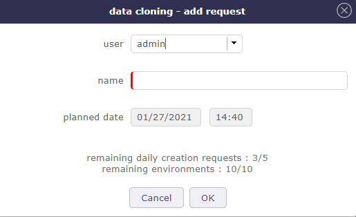

Tools¶
Emails sent¶
Users can have a look at the list of the automatic emails sent.
All the information about the email, including the status showing whether the email was correctly sent or not.
Emails to send¶
You must enable the Activate email grouping option in the global parameters
The programmed emails will be grouped in this screen before their automatic sending based on the period entered in the global parameters
Scheduled report¶
In reports, you can schedule sending emails for accurate reports.
You can get the list and details of this programming on this screen
Click on Button  to cancelled the programmation
to cancelled the programmation
Scheduled report screen
Alerts¶
Users can have a look at the alerts sent.
By default, administrators can see all the alerts sent, and other users only see their own alerts.
Alert screen
Button Mark as read
The button is available if the user alert is not tagged “read” yet.
Messages¶
You can define some message that will be displayed on the connection screen.
Optionally, the message can be shown on login screen.
You can limit the display by profile, project and user.
The message will be displayed in a color depending on the message type.
Section Description
| Field | Description |
|---|---|
| Id | Unique Id for the message |
 Title Title |
Header of the message |
| Message type |
Type of message |
| Sart Date | Date when the message begins |
| End Date | Date when the message ended |
| Message | Complete text of the message |
| Profile | The message is limited to users with this profile |
| Project | The message is limited to resources allocated to the project |
| User | The message is limited to this user |
| Show on login screen | Show this message on login screen |
| Closed | Flag to indicate that the message is archived |
Legal notice¶
Legal notice screen
The General Data Protection Regulation (GDPR) governs the processing of personal data in the territory of the European Union.
Above all, this involves informing people about what you do with their data and respecting their rights. As a data controller, or as a processor, you must take measures to ensure that this data is used that respects the privacy of the persons concerned.
You can define a “legal” message that will be displayed when you log in from the home screen.
For this message to disappear, it must be scrolled to the read confirmation button.
Legal notice screen
This allows you to have a real-time follow-up of the users who have confirmed the reading of this message.
Note
What is the GDPR?
The abbreviation GDPR stands for “General Data Protection Regulation” (GDPR). The GDPR governs the processing of personal data in the territory of the European Union.
The legal context adapts to follow developments in technologies and in our societies (increased use of digital technology, development of online commerce, etc.).
This new European regulation is a continuation of the French Data Protection Act of 1978 and strengthens the control by citizens of the use that may be made of data concerning them.
It harmonizes the rules in Europe by offering a unique legal framework to professionals. It helps to develop their digital activities in the EU based on the trust of users.
Visit the CNIL web site here
Import data¶
Imports data from CSV or XLSX files.
How to do
- Select the element type from the list.
- Select file format (CSV or XLSX).
- Select the file.
- Click on Import data button to start importing.
Report of the import
- Data that is not imported because not recognized as a field appear in grey text in the result table.
- Data that are voluntarily not imported (because must be calculated) appear in blue text in the result table.
Import users
- The password field must be cut and pasted from the database because it is encrypted.
- If you enter some readable password, the users will not be able to connect.
Warning
- If you want to create new users don’t put any id because if id already exists, it will be overridden by the new (with possibility to erase admin user…).
- Always keep in mind that your import may have some impact on administrator user.
- So be sure to keep an operational admin access.
Importing document versions
Two ways to import document versions:
- by describing only the version, with its standard fields.
- by describing the document and the version (the name of the fields of the version will be followed by ‘(DocumentVersion)’, or its translation into the current language).
Note
CSV import
- The CSV import file may also include :
- ‘importFile’ field that will give the link to the version file (this file will have to be reachable by the PHP server).
- ‘target’ field that can be set to ‘DELETE’ (the file to be imported is deleted after import) or a directory name (the file to be imported is moved to this directory after import) or nothing (the file to be imported is not modified).
File format¶
The content of the imported file must fit the element type description.
To know the data that may be imported, click on the button.
Names of columns
- The first line of the file must contain the name of the fields.
- Names of columns can contain spaces (to have better readability).
- The spaces will be removed to get the name of the column.
Tip
- Look into the model class. The names are the same.
Date format
- Dates are expected in format “YYYY-MM-DD”.
Data import process¶
Operations are performed, depending on whether the element type, the column or the column value.
Column Id
You may or may not add an “id” column in the file.
Column “id” exists and “id” is set in a line
- The import will try to update the corresponding element, and will fail if it does not exist.
Column “id” does not exist or if “id” is not set in a line
- The import will create a new element from the data.
Linked tables
For columns corresponding to linked tables (“idXxxx”), you can indicate as the column name either “idXxxx“ or “Xxxx” (without “id”) or the caption of the column (as displayed on screens).
Numeric value
- If the value of the column is numeric, it is considered as the code of the item.
Non numeric value
- If the value of the column contains non numeric value, it is considered as the name of the item, and the code will be searched for the name.
Columns with no data
- In any case, columns with no data will not be updated.
- Then you can update only one field on an element.
Clear data
- To clear a data, enter the value “NULL” (not case sensitive).
Planning elements
- Insertion into “Planning” elements (activity, project), automatically inserts an element in the table “PlanningElement”.
- The data of this table can be inserted into the import file.
Tickets
- Do not import the value of “real work” on tickets, even if it is specified in the import file.
Automatic import¶
Imports can be automated.
Files placed on a defined directory will automatically be imported.
Note
- Automatic import parameters must be set in Global parameters.
- Background task must be started by Administration Console.
The files must respect some basic rules.
File name format
- File name format is : “Class”_”Timestamp”.”ext”
- Example of import file name: Ticket_20131231_235959.csv
Class
- The type of item to be imported (Ticket, Activity, Question, …).
Timestamp
- Timestamp defined to be able to store several files in the directory.
- Format is free.
- The recommended format is “YYYYMMDD_HHMMSS”.
Ext
- File extension, representing its format.
- Valid extensions are CSV and XLSX.
File format
- The files must follow the ProjeQtOr File format.
- Files must be full and consistent.
Tip
- The files should not be directly created in the import folder.
- They must be created in a temporary folder and moved afterwards.
Import process
- Correctly imported files are moved to a “done” sub folder of the import folder.
- If an error occurs during import of a file, the full file is moved to “error” sub-folder of the import folder, even if there is only one error over many other items correctly integrated.
- You can get the result as a log file and/or email summary.
Cloned Environnement¶
You can duplicate the complete environment (data and code) to form a simulation environment.
Important
The CRON program must be started and running so that the simulation request can be taken into account and can be generated.
Administration of simulation requests
Cloned environment parameters
This parameters are also be accessible from simulated environments.
Click on on the Simulation Management screen
Management of rights and limitations per profils
Definition of profiles that have the right to create a simulation.
You can limit the number of total simulations per profiles.
This limitation can have some advantages:
- Avoid saturating the server.
- Force users to clean up their files.
- Limit performance degradation caused by the creation of a simulated environment
The removal requests are decremented. If the limits are reached, the request screen to create a simulated environment is blocked.

Example of a invalid request due to too much creation request.
Sequencing of the creation of simulations
The time required to create a simulation space may vary. Depending on your database, your servers or even if several requests are generated simultaneously. It is an operation which can take time. That is why you can set frequencies for creation requests.
Fixed frequency
Analyzes creation requests at regular intervals and starts the generation of simulation environment as soon as a request is encountered.
At a given time
In order to avoid any slowing down of the database, you can program the generations of the spaces at a specific time of the day. This allows these to be programmed outside working hours.
Copying datas
It is necessary to copy the code and the data because the simulations created in a version could no longer be compatible with the code of the main instance that has migrated.
The creation of a simulation instance is a heavy process for the server: duplication of code, duplication of data…
That’s why when generating your simulation space, not all data is copied.
Is not copied
- Archived data (closed)
- Update history
- Attached documents and files
Copy of the code
Disabling all automation and notifications.
Update the simulations table to record the actual creation:
- Date and time of actual creation,
- Flag “available environment”
- Instance access URL
The cloned Environment managment
Cloned environment managment
This screen allows you to manage your queries for new simulation environments, to follow them or to request the deletion of a particular simulation.
You can also track requests from other users based on your profiles and your rights.
Generating a simulation environment
To request the creation of a new simulation area, click on
A pop up will appear allowing you to make your request.
Add request
Identify the profile making the request, name your space (required) and confirm your request by clicking on OK
The simulated databases will always have a name prefixed by simu_ followed by the name of the simulation.
Dates
- Creation dates: Indicate precisely the date on which you made your request for simulation space.
- Availability dates: Indicates the date on which your space was actually generated. They are indicated to you when your request is taken into account.
- Delation dates: Indicates the date on which your space will be completely deleted. The simulation space must actually be generated for the deletion request status to appear. If the database is in the request phase and therefore not yet generated, then the deletion is immediate and the deletion request status does not appear..
Color code
- Blue: Request being created
- Orange: Warning (delete request)
- Red: Error creating the environment (path, rights …)
- Green: Environment creates
Go to the cloned Environment
When your simulation is ready, green status, you can open your cloned environment. Click on to launch the environment.
A new tab opens with a new ProjeQtOr session. Authenticate yourself, you can start working in your environment.

Cloned environment session
The instance area turns red when you are in a simulation space.
Not all screens or functions will be accessible in this space.
For example, you will not be able to request and create a new simulation space in your cloned environment.
Copy a cloned Environment
You did a successful simulation on one of your cloned environment.
You want the copy to run other tests but without touching the simulation.
Just copy this environment.
The origin of the copy will then be indicated in the list with a shortcut to access it.
Deleting a simulation environment
Deletion requests are stored in the simulation table.
They are processed in the same process as creations, but always with priority to free up space before allocating new resources to new instances.

{kind=link}
{kind=link}
{kind=link}
Tip
To avoid overly broad rights management and server invasion problems, all simulations (code) will be placed in a “simulation” directory outside of the main ProjeQtOr directory.
Thus, if the main instance is accessible via the url “projeqtor.xxx.fr”, the simulations will be accessible via the url “projeqtor.xxx.fr/simulation/nom_de_simulation”.
Notifications¶
You can defined manually notifications in this screen.
Notifications
You receive notifications as soon as you authenticate on the login screen
When you are logged in, you have a reminder at the top of the screen.
You have the number of unread notifications
Hover over it for the list of notifications to appear
A slight color line in front of the name indicates the type of notification
- Red = alert
- Blue = information
- Yellow = warning
Click on the name of the notification to display its detail screen.
You can also display the notification in the part below the menu.
See: Secondary menu - Notifications section
Click on an unread notification for discover the details.
- The first icon indicates the type of notification
- the second icon indicates how the notification was created
- System Notification
- Manual Notification
- The third icon indicates if the notification has a definition. see: Notification System
- Click on the fourth icon for display the detail of the notification
{kind=link}
{kind=link}
{kind=link}
{kind=link}
Audit connections¶
Audit connection proposes a view of “who is online”.
you can know which platform the user has logged on to, his browser and dates of his first and last access, as well as the duration of the connection
Note
The administrator has the possibility to force the disconnection of any user (except his own current connection, see: admin-console.